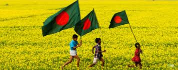

Bangladesh's tourist attractions include, historical and monuments, resorts, beaches, picnic spots, forests and tribal people, wildlife of various species. Bangladesh offers ample opportunities to tourists for angling, water skiing, river cruising, hiking, rowing, yachting, sea bathing as well as bringing one in close touch with pristine nature.
In the northern part, comprising the Rajshahi division, there are archaeological sites, including the temple city Puthia in Rajshahi; the largest and most ancient archaeological site, Mahasthangarh in Bogra; the single largest Buddhist monastery, Paharpur in Naogaon; the most ornamental terracota Hindu temple in Bangladesh Kantaji Temple, and many rajbaris or palaces of old zamindars.
Notice Board
KPI Meeting Notice (No-3078; Date:22-12-2014)
Transfer Order- 3074; Date: 21-12-2014
Office Order; Acceptance of Resignation Letter of Mr. Mahidur Rahman, ...
KPI Meeting Notice (No-3066; Date:18-12-2014)
Official Notice-3044; date: 15.12.2014